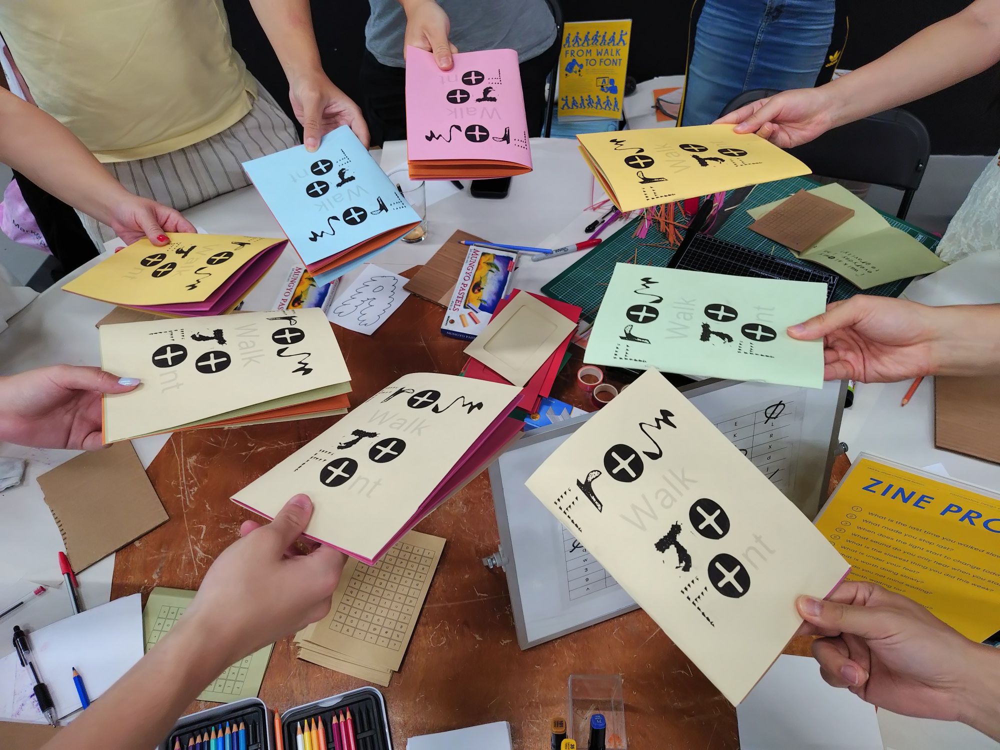

From Hand to Font
This is a passion project I started to practice my AI and front-end coding skills while contributing to the community. It is a community-based project that invites non-designers to create their own fonts.
Participants draw the alphabet by hand, and their drawings are converted on the spot into a typeable digital font. As a token of gratitude for participating, each participant receives a zine that is also printed on site.
Thank you to Market Root in Canada Water, Rhizomatic in Hackney Wick, Create Space London in Kensington, Kindred Studio in Ladbroke Grove, and the Bremen Zine Festival in Germany for accepting my proposal and providing venues and relevant materials.
What visitors will find on the site — add content here.
When I refresh the page, all the hand-drawn alphabet images disappear, since I did not code the backend. I'm wondering whether there are backend developers I could collaborate with to improve this workshop experience so it can run remotely as well.